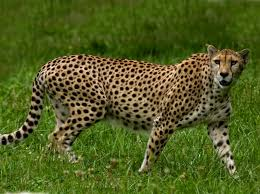
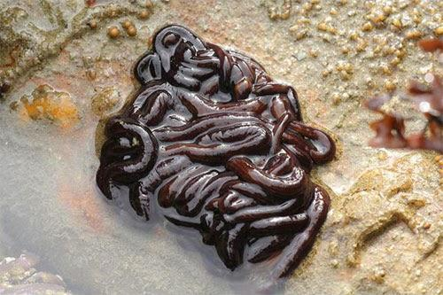
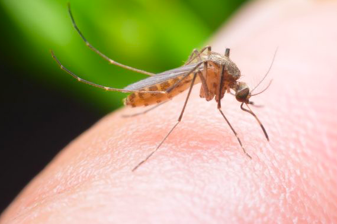
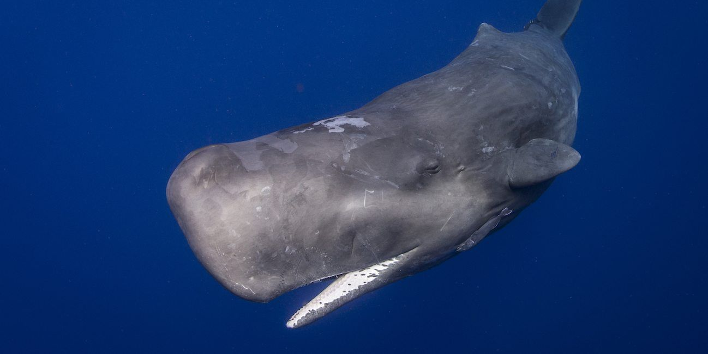
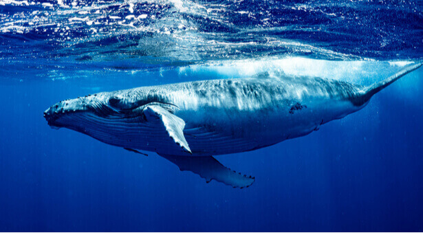
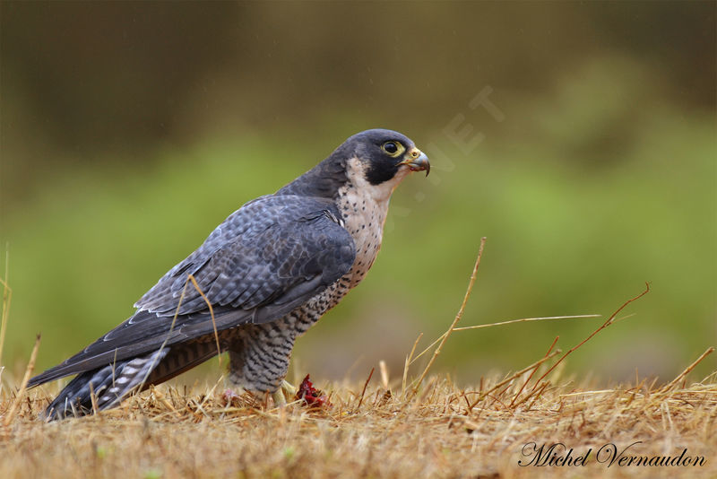
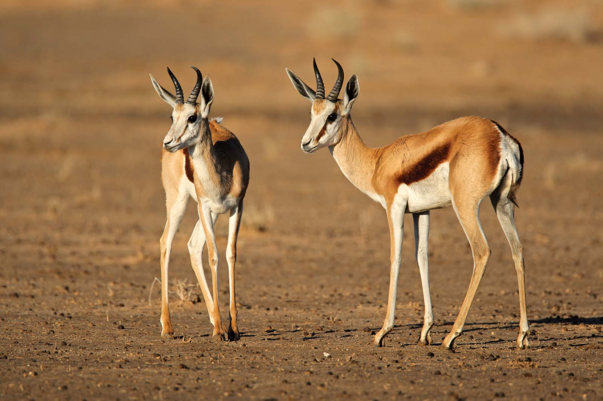
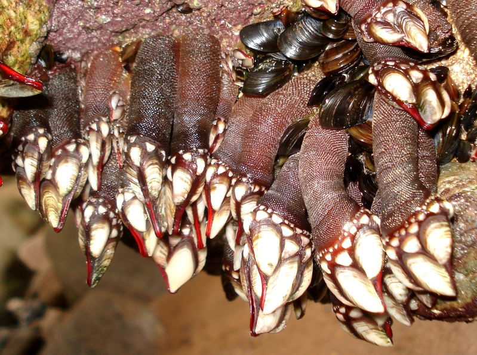
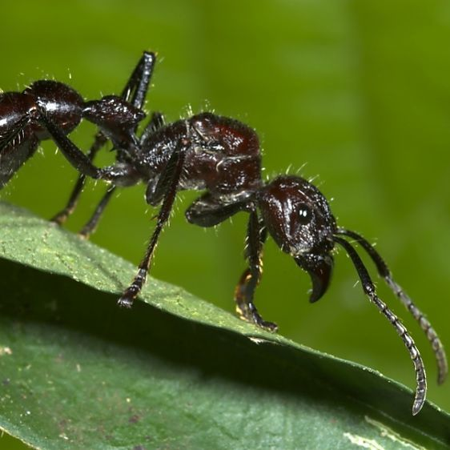
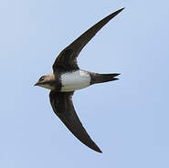

Animaux :
- Étant le plus rapide
- Le plus rapide dans les airs
- Le plus rapide en mer
- Étant le plus long
- Le plus mortel
- Ayant le plus gros cerveau
- Étant le plus fort
- Étant le plus lourd
- Sautant le plus loin
- Parcourant le plus de distance dans sa vie
- Ayant le plus long pénis par rapport à sa taille
- Avec la piqûre la plus douloureuse
- Ayant les plus grands yeux
- La plus longue durée de vie
- Volant le plus longtemps
Nature :
- Record du col de montagne le plus élevée
- Record de la route la plus haute
- Record de l'endroit habité le plus froid
- Record de la mine la plus profonde
- Record du point sur la terre le plus profond
- Record de la plus épaisse couche de glace
- Record de l'endroit ou les températures sont les plus basses
- Record de la terre la plus septentrionale du monde
- Record de l'endroit habité le plus chaud
- Record de les parois rocheuse les plus grandes
- Record de la cavité naturelle la plus profonde
- Record de l'endroit habité le plus isolé de la planète
- Record de l'endroit avec la température la plus chaude
- Record de la ville la plus haute du monde
- Record de l'endroit le plus sec
Sport :
- Record du tour monde en 45 jours
- Record du plus haut saut à la perche
- Record de médailles olympiques en natation
- Record du plus grand gagnant du Tour de France
- Record du plus rapide sur 100 et sur 200 mètres
- Record du nombre de buts inscrit en une année
- Record de buts en liga
- Record sur 400 mètres
- Record de points marqué durant sa carrière
- 5 Champions Leagues consécutifs
- Record de victoire en une saison NBA
- 5 buts en 9 minutes
- Record de trophée au football en tout
- un but à 91,9 mètres
- 1500 mètres dame en 3 min 50 s 07
Particularités :
- La plus grande bouche
- Record des ongles les plus long du monde
- Le plus long nez au monde
- L'homme le plus tatoué, Lucky Diamond Rich
- Les plus longs cheveux du monde
- Les plus longs poils d’oreilles
- La plus grande langue
- La plus longue barbe
- Les plus grands globes oculaires
- Les plus longues jambes
- Les plus gros biceps du monde
- La femme la plus petite du monde
- La taille la plus fine du monde
- La fille la plus poilue du monde
- La plus grosse poitrine naturelle du monde
Insolite :
- Record des plus grosses paire de cornes
- Record du plus jeune DJ de club
- Record du plus grand nombre de rubiks cube résolu
- Record de l'œuvre vendue la plus chère aux enchères
- Record du plus long séjour au sommet d'un mât
- Record de la plus grande moto pilotable
- Record du nombre de buts marqué par un joueur au mondial de football
- Record de la plus grande réplique de décor en Lego
- Record: la « vampire mexicaine »
- Record du youtuber le mieux payé au monde
- Record: cimetière de Wadi al-Salaam
- Record de la plus jeune personne à avoir fusionné 2 atomes de deutérium
- Record du plus grand orchestre
- Record de la plus jeune femme à barbe
- Record de la plus veille personne a faire un saut en parachute
Célébrité :
- Jennifer Aniston
- Cristiano Ronaldo
- Ariana Grande
- Eminem
- Ellen DeGeneres
- Jennifer Lawrence
- Justin Bieber
- Taylor Swift
- Alex Rodriguez
- Jackie Chan
- Dolly Parton
- Katy Perry
- Ed Sheeran
- Sam Smith
- Hiroyuki Terada
Jeux Vidéos
- Un salaire conséquent
- Un budget digne d'un film d'hollywood
- Un succés Mondial
- une partie de jeu vidéo de 572h
- Une partie de JOUST en version arcade
- 138h et 34 secondes de JUST DANCE 2015
- Du Call Of Duty pendant des heures
- La collection ultime
- Un rassemblement pour la bonne cause
- Un score à 19 chifffres sur GIGA WING 2
- 169 Victoires d'affilées sur STREET FIGHTER IV
- Super Mario Bros. en moins de 5min
- Speedrun de GTA, 53 MINUTES ET 29 SECONDES PAR MHMD_FVC
- Speedrun de SUPER MEAT BOY,17 MINUTES ET 43 SECONDES PAR VORPAL
- Speedrun de SKYRIM, 35 MINUTES ET 20 SECONDES PAR I_NEED_A_DOCTOR
- Speedrun de DOOM 2 : HELL ON EARTH, 19 MINUTES ET 59 SECONDES PAR ZERO-MASTER
- Speedrun de DISHONORED, 33 MINUTES ET 59 SECONDES PAR MRWALRUS
- Speedrun de PORTAL 1, 7 MINUTES ET 54 SECONDES PAR IMANEX
- Speedrun de ZELDA : OCARINA OF TIME, 17 MINUTES ET 45 SECONDES PAR SKATER82297
- Speedrun de HALF-LIFE, 20 MINUTES ET 41 SECONDES PAR QUADRAZID
Record Animaux
Le plus rapide :
Le guépard est l'animal terrestre le plus rapide au monde. Il peut courir jusqu'à une vitesse de 112 km/h.
Le plus long :
Le ver lacet mesure généralement 30 mètres mais il peut aller jusqu'à la longueur impressionnante de 60 mètres ! Ce ver aquatique vit généralement près des côtes anglo-saxonnes.
Le plus mortel :
Le moustique ! Vecteur de maladies comme la malaria et la fièvre jaune, le moustique est responsable chaque année de la mort de plus de 750.000 personnes
Le plus gros cerveau :
Eh non, ce n'est pas le nôtre... Pesant en moyenne pas moins de 8 kg, le cerveau du cachalot est le plus imposant du monde animal. h2 A titre de comparaison, celui de l'Homme pèse 1,5 kg.
Le plus fort :
Proportionnellement à sa taille, c'est le scarabée Onthophagus taurus qui est le plus fort. Il est capable de porter 1.141 fois son poids...
C'est comme si un Homme pouvait porter à lui seul 82 tonnes.
Le plus lourd :
Pesant pas moins de 150 tonnes, la baleine bleue est l'espèce la plus lourde du règne animal !
Le plus rapide en mer :
L'espadon-voilier est le nageur le plus rapide. Vivant dans les eaux de l'océan Indien et du Pacifique,
il peut aller jusqu'à 110 km/h.
Le plus rapide dans les airs :
En piqué, il peut voler jusqu'à 322 km/h... le faucon pèlerin est le plus rapide dans les airs !
Celui qui saute le plus loin :
La gazelle springbok, qui utilise de grands bonds pour échapper à ses prédateurs. Elle peut sauter jusqu'à 15 mètres de longueur !
Celui qui parcourt le plus de distance dans sa vie :
La sterne arctique. Ce petit oiseau nordique peut parcourir pas moins de 2,4 millions de km de migration en migration...
soit trois allers-retours entre la Terre et la Lune.
Celui qui a le plus long pénis par rapport à sa taille :
Le crustacé pouce-pied. Son organe reproductif mesure pas moins de 8 fois la longueur de son corps.
La piqûre la plus douloureuse :
La Paraponera clavata, alias fourmi à balle de fusil. Cette espèce d'Amérique centrale inflige une piqûre terrible, dont la douleur peut durer 24 heures.
Celui qui a les plus grands yeux :
Le calmar colossal, qui porte bien son nom... Ce mollusque peut mesurer jusqu'à 14 mètres, et la taille de ses yeux est bien entendu proportionnelle.
Les plus grands mesurés sur cette espèce sont de 27 cm
Celui qui avec la plus longue durée de vie :
La minuscule méduse appelée Turritopsis nutricula. Elle est la seule espèce connue à ce jour à être immortelle !
Elle serait capable de se régénérer en mettant en oeuvre une sorte d'auto-clonage.
Celui qui vole le plus longtemps :
Le martinet à ventre blanc. Cet oiseau peut voler plus de 6 mois sans s'arrêter pendant sa migration. Il se repose en vol plané.
